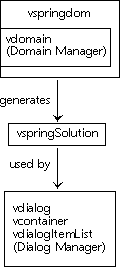
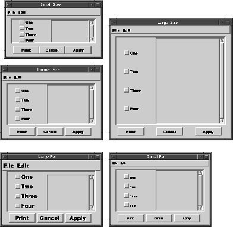
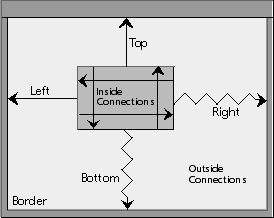
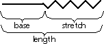

Spring
The Spring classes provide a way of positioning a set of objects in a two-dimensional space based on the dynamic bounds of a single, resizable border rectangle.
This functionality is provided on two levels, as illustrated in Figure 72. The higher level spring information (vspringdom) is compiled into a lower level data object (vspringSolution) so that the Dialog class can efficiently use the information to place dialog items from item lists.The lower level uses an uneditable set of spatial relationships to position a fixed number of objects. The higher level allows you to alter the spatial relationships between the objects and to change the number of objects in the set. Figure 73 illustrates the primary function of the Spring Manager. You can use the Spring Manager to arrange the items in your dialog when a user resizes the dialog or opens it with different fonts or look-and-feels. This figure shows the same dialog in five different situations. The upper left-hand dialog is at its minimum size and uses a regular size font. The middle left-hand dialog is at its default size and uses a regular size font. The upper right-hand dialog has been grown to a large size and uses a regular size font. The lower left-hand dialog is at the default size and uses a large font. The lower right-hand dialog is at the default size and uses a small font. The Spring Manager keeps track of the spatial relation between the items and the internal dimensions of the items.
Figure 72. The relationship of spring information to data objects

Figure 73. Five examples of resized dialogs as arranged by the Spring Manager

The lower level of the Spring Manager has two data types: the spring solution and the spring arranger class. The spring solution describes the set of relationships between the objects. The spring arranger class holds the functions used to get information on the individual objects in a given context. For example, the position of the left-hand side of object A may be offset by a fixed amount from the right-hand side of object B, and the width of B may be determined during run-time by the length of a string in the current system font. The corresponding solution fragment stores the offset between A and B and the knowledge that the width of B needs to be determined at run-time. When that piece of the solution is eventually applied, the identifier for object B is passed to the appropriate arranger method, which returns the desired information (the natural width of B in the current context). You can also calculate a minimum size for the border rectangle from a spring solution.
The higher level has one major data type: the spring domain or springdom. The spring domain is a subclass of the default domain class. The generic domain is described in the Domain class. A spring domain has a special attribute, a border, that is not found in generic domains. The size and position of this border form the dynamic bounds that are the ultimate basis for the position of all of the objects in the domain. Spring domain objects are super-structures of generic domain objects, and spring domain object sets function the same as generic domain object sets (except that they collect spring domain objects). The spring domain connection is the new minor type that you use to manipulate the spatial relationships between objects.
Each object in a spring domain has eight connections that determine the placement of the object with respect to other objects or to the domain's border. There are two connections for each of the left, right, bottom, and top edges of the object. One of these connections is directed away from the object and is typically connected to a different object or to the domain's border. The other is directed into the object and is typically connected across the object to the opposite edge. You may change the attributes of a connection so that its length is equal to a fixed distance, a natural distance determined at run-time, or either of these distances plus an amount that stretches according to the current border bounds.
Spring domains compile into spring solutions. However, certain configurations of spring connections are considered illegal. Namely, if there is no degree of stretchiness in a given chain of connections, or if a chain of connections form a loop, then all of the connections in that chain are in error. These configurations are allowed in spring domains because they may be only transitional states, but their solutions do not have completely defined behavior.
Strictly speaking, spring solutions are stored with dialog item lists and not with dialogs proper. This means other objects that have dialog item lists can keep a spring solution for the items in these lists. For instance, containers have their own spring solutions. (You can use the Visual Resource Builder to specify the connections between items in a container, too.)
You may use the Spring Manager directly to build spring solutions from scratch, to tailor the spring solutions generated by the Visual Resource Builder, or to handle the placement of objects other than dialog items.
You can use either of the following two calls to destroy a spring domain:
Once you have a spring domain, you will want to add some number of objects. Objects must be added one at a time by calling one of the following:
Figure 74. The default configuration of connections for new spring objects

With these connections, objects will not resize nor will they move relative to the border's upper left-hand corner when the border resizes. You can modify any or all of these eight connections to change how an object resizes and moves when the border resizes.
It is important to remember that the concept of connection for spring domains is totally different from the one of connection for generic domains. For generic domains, connected objects are selected and unselected in tandem, but are not moved or resized together. For spring domains, however, connected objects are positioned in relation to one another, but whether they are selected is not tied together in any way. Refer to the Domain class for more information about connecting objects in a generic domain.
You can use the following call to get a pointer to a particular spring connection, in this case the left outside connection:
The first attribute of a spring connection is where it is attached to. You can attach a connection to any object or border edge, as long as you do not mix the horizontal and vertical dimensions and do not try to attach a connection to its own edge. The following call attaches the above connection to the right edge of another object:
However, if you attach a connection to an edge that is connected back, all of the attributes of the current connection are given to the mirroring connection. This insures that there is no confusion about how to determine the separation between the two edges.
Figure 75 shows the two segments that combine to form the length of a connection. The length of a connection is made of two segments: the base and the stretch. The connection's attributes specify how the size of the base is determined, naturally or with a fixed value, and whether the stretch is non-zero. The connection's base can be a fixed number or a number that varies according to the internal properties of the object. The first type of base is called a fixed base, and the second a natural base.
Figure 75. The illustration of a connection's length, base, and stretch

The following call tells the Spring Manager to use a natural base:
If there is no stretch along a complete chain, then the connections along that chain are considered to be in error, and the position of their edges are undefined. Also, chains that loop in upon themselves are errors and cannot be solved by the Spring Manager. The following call will tell you if a particular connection is in error:
The following call returns the current length of a connection (current base + current stretch), assuming that Recalculate has been called since the last change of a spring connection attribute:
Once you have a stand-alone solution (that is, not the one returned by GetSolution), you can give it to a dialog, a container, or any dialog item list. These objects take over ownership of the passed solution. Once they have a new solution, you will have to tell them to arrange themselves according to it. The following sequence of calls is for a dialog. Refer to the Container chapter for the corresponding calls.
You may now reconfigure any or all of the connections between the objects. When you are done, you can compile a new solution and pass it back to the dialog.
To implement an arranger class, you need to organize your objects into some type of ordered group. The only necessary property of this group is that pointers to the individual objects can be returned one by one, given a single pointer and an increasing index value. The Spring Manager will pass the group's pointer to all of the arranger methods it uses, but your method functions need not use it for anything.
For example, suppose that the type of your objects is Thing, and you have another type called Group with which you can find your objects given an index. You need to create the following class structure:
Now you need to define the methods you will use for your arranger class. The first necessary method is vspringGET_ITEM_AT. The Spring Manager calls this method to get the individual item pointers. Your method should have the following form:
First of all, your arranger class should inherit from the class returned by vspringdomGetDefaultArrangerClass. The following should be used in your class initialization:
vspringSET_ITEM_RECT Sets the domain object bounds to the specified rectangle.
vspringGET_ITEM_RECT Returns the current domain object bounds.
vspringGET_ITEM_MIN_SIZE Returns zero for both dimensions.
vspringGET_ITEM_NATURAL_SIZE Returns the current width and height.
vspringCONSTRAIN_ITEM_SIZE Leaves the width and height alone.
vspringGET_NATURAL_ITEM_SEPARATION Returns zero.
The spring2 sample shows how to create a spring domain with three objects from scratch, and use the Spring Manager for things other than dialog items and without a spring domain
The spring3 sample shows how to tailor a pre-existing spring solution by decompiling it and adding or removing objects.
Key Functionality
The easiest way to use the Spring Manager is through the Galaxy Visual Resource Builder. The Visual Resource Builder allows you to specify all of the connections between items in a dialog. When a dialog's resource file is saved, a spring solution is generated for the dialog and saved as well. When the dialog is loaded and used, the spring solution determines how the items are placed. The placements are based on the size of the dialog and other run-time variables, such as the current application font. You do not need to make a single Spring Manager function call. Building Spring Solutions from Scratch
The suggested way to build a spring solution from scratch is (1) create a spring domain with the appropriate number of objects, (2) set all of the individual connections, (3) compile the domain into a solution, and (4) destroy the domain. The second and third steps can be repeated any number of times. This process is relatively expensive, but it is far easier than directly manipulating the solution, which was designed mainly for space efficiency. Creating, Populating, and Destroying Spring Domains
The following call creates a new spring domain of the default class: vspringdom *springdom;
springdom = vspringdomCreate();
However, since the spring domain inherits from the general-purpose domain, you may also use the following: vdomain *domain;
domain =
vdomainCreateOfClass((vdomainClass *) vspringdomGetDefaultClass());
For more information on how inheritance works in Galaxy, see the Class Manager chapter. vspringdomDestroy(springdom);
vdomainDestroy(domain);
A domain has no objects initially. A spring domain, however, starts with one pseudo-object: the border. The border cannot be removed, nor can another one be added. The positions of the other objects in the domain, the real objects, are ultimately based on the bounds of the border. Therefore, all object connections must go to the border either directly or through a chain of other connections. The following call returns an object pointer for the border: vspringdomObject *border;
border = vspringdomGetBorder(springdom);
This pointer can only be used with certain Spring Manager functions, and it cannot be used with any Domain class functions. vspringdomObject *object;
object = vspringdomAddObject(springdom);
or: vspringdomObject preallocatedObject;
vspringdomAddInitObject(springdom, &preallocatedObject);
After you are done with individual objects, they can be removed with vspringdomRemoveObjects. This function takes an object set (in addition to the spring domain) instead of an individual object. You can use the object set functions provided by the Domain class by casting vspringdomObjects to vdomainObjects and then casting vdomainObjectSets to vspringdomObjectSets. For example: vdomainObjectSet *objectSet;
vspringdomObject *object1, *object2;
objectSet = vdomainCreateObjectSet(NULL);
vdomainAddToObjectSet(&objectSet, (vdomainObject *) object1);
vdomainAddToObjectSet(&objectSet, (vdomainObject *) object2);
vspringdomRemoveObjects(springdom, (vspringdomObjectSet *) objectSet);
vdomainDestroyObjectSet(objectSet);
You should be careful when performing these casts, however, because you are essentially disabling the normal argument type checking. The following is the easiest way to remove an individual object: vspringdomRemoveObjects(springdom, vspringdomObjectToSet(object));
When other objects are connected to an object that is being removed, their connections are reattached to either the corresponding border edges (for external connections) or the opposite object edges (for internal connections). Changing Spring Connection Attributes
When you add a new object to a spring domain, it has the default connections shown in Figure 74. The left and top outside connections have fixed lengths and are connected to the corresponding border edges. The right and bottom outside connections stretch to the corresponding border edges. All four inside connections have fixed lengths and are connected to the opposite object edge. vspringdomConnection *connection;
connection = vspringdomGetObjectConnection(springdom, object,
vspringdomLEFT_OUTSIDE);
Once you have its pointer, you can change the connection's attributes. vspringdomObject *anotherObject;
vspringdomConnectToObjectEdge(springdom, connection,
anotherObject, vspringdomRIGHT);
The following two calls return the object and edge a connection is attached to: vspringdomObject *toObject;
int toEdge;
toObject = vspringdomGetObjectConnectedTo(springdom, connection);
toEdge = vspringdomGetEdgeConnectedTo(springdom, connection);
You can use the following call to find out the set of objects that have at least one connection to, say, the bottom edge of an object: vspringdomObjectSet *connectedSet;
connectedSet = vspringdomGetObjectsConnectedToEdge(springdom,
toObject,
toEdge);
When you reattach a connection, none of the connection's other attributes change. The Visual Resource Builder does change the length of fixed, non-stretching connections for your convenience. When using the Spring Manager directly, you must do this yourself. vspringdomUseConnectionNaturalBase(springdom, connection, TRUE);
The following pair of calls tells the Spring Manager to use a fixed base of 50 display units (typically rounded to pixels): vspringdomUseConnectionNaturalBase(springdom, connection, FALSE);
vspringdomSetConnectionFixedBase(springdom, connection, 50);
You can retrieve the type of base used for the connection by the following: vbool useNaturalBase;
useNaturalBase = vspringdomUsesConnectionNaturalBase(springdom,
connection);
The following call returns the current value of the connection's natural base regardless of whether it is being used to determine the connection's length (that is, it is only used if the useNaturalBase attribute is TRUE): int naturalBase;
naturalBase = vspringdomGetConnectionNaturalBase(springdom,
connection);
The following call returns the current value of the connection's fixed base regardless of whether it is being used to determine the connection's length (that is, it is only used if the useNaturalBase attribute is FALSE): int fixedBase;
fixedBase = vspringdomGetConnectionFixedBase(springdom, connection);
A connection only has a stretch segment if its stretches attribute is TRUE. The following call tells the Spring Manager to stretch a connection: vspringdomSetConnectionStretches(springdom, connection, TRUE);
You can use the following call to see if the connection can stretch: vbool stretches;
stretches = vspringdomGetConnectionStretches(springdom, connection);
The value of any stretch ultimately depends upon the bounds of the spring domain's border. When the Spring Manager places objects, it first positions objects (actually edges) along a complete chain of connections from, say, the left border to the right border. Next, objects along complete chains from object edges already placed are placed, and so on. Within each of these chains, there must be a least one stretch segment. The stretch segments in a chain equally split the difference between the chain endpoint separation and the total of the base segments. vbool hasError;
hasError = vspringdomHasConnectionError(springdom, connection);
After you have performed a number of connection attribute calls, you need to call the following: vspringdomRecalculate(springdom);
This updates the internal solution of the domain and arranges all of the objects according to it. A recalculation is fairly expensive, so you should perform as many connection attribute changes as possible before doing it. A recalculation will only be performed if it is needed. If no operations that affect the solution have been performed since the last recalculation, then Recalculate will just return without doing anything. int length;
length = vspringdomGetConnectionCurrentLength(springdom, connection);
The following call returns the current position of an object's edge, (in this case the top), assuming that Recalculate has been called since the last change of a spring connection attribute: int position;
position = vspringdomGetObjectEdgeLocation(springdom, object,
vspringdomTOP);
The basic function that manipulates the rectangles of spring domain objects directly is RelocateObjects. It does this by editing the length of fixed-base, non-stretchy connections. It does not call Recalculate when it is done. The following call tries to move the left edges of the objects in the object set left by 10 and to grow the widths by 30: vspringdomRelocateObjects(springdom,
(vspringdomObjectSet *) objectSet,
10, 0, 30, 0);
vspringdomRecalculate(springdom);
You can use the locked connection attribute to tell the Spring Manager whether to edit a fixed-base connection during RelocateObjects calls. In the Visual Resource Builder, a TRUE value for this attribute prevents the resizing of the connection during drags. Whether a connection is locked does not affect calls to SetConnectionFixedBase. The following call locks a connection: vspringdomSetConnectionLocked(springdom, connection, TRUE);
You can tell if a connection is locked by calling the following: vbool locked;
locked = vspringdomIsConnectionLocked(springdom, connection);
You may also use any of the generic domain object manipulation functions provided by the Domain class, such as vdomainMoveObjects and vdomainResizeObjects. The Spring Manager overrides the domain methods so that it can perform or approximate the desired behavior by resizing various connections. For the most part, these manipulation functions are implemented by calling RelocateObjects. All of the overridden methods that change connection attributes automatically call Recalculate when they are finished. Compiling a Spring Domain
Once a spring domain is set up as you like it, you can compile it into a solution for use by dialog and container item lists. The following call returns a newly created solution that reflects the current state of a spring domain: vspringSolution *solution;
solution = vspringdomCompile(springdom);
If you already have a solution, you can call the following, which is slightly more efficient: vspringdomRecompile(springdom, solution);
The following call returns the current solution used by the spring domain after performing any necessary recalculation: solution = vspringdomGetSolution(springdom);
This solution is only valid until the next call that changes a connection attribute or until the next call to SetSolution. You should not destroy this solution. vdialog *dialog;
vrect rect;
vdialogSetSolution(dialog, solution);
rect = *vwindowGetRect(vdialogGetWindow(dialog));
rect.x = rect.y = 0;
vdialogArrange(dialog, &rect);
Tailoring Spring Solutions
The previous section describes the creation of a spring domain from scratch and the passing of a solution compiled from it to, for example, a dialog. Suppose you have a dialog with a perfectly valid spring solution, but the spring domain that generated that solution is long gone. The Spring class provides the following call to create a full spring domain from a spring solution: vdialog *dialog;
vspringSolution *solution;
vspringdom *springdom;
solution = vdialogGetSolution(dialog);
springdom = vspringdomDecompile(solution);
The newly created spring domain has as many objects as the number of items that the spring solution could place, typically the number of dialog items in the dialog's item list. The topmost object corresponds to the first item in the dialog's item list, and the order is maintained through to the bottommost object. Using the Spring Manager for Other Objects
If you wish to use the placement scheme provided by the Spring Manager for objects other than dialog items, then you must define your own arranger class. The Spring Manager will use this class to get information like minimum and natural sizes. Also, it will use it to actually set the rectangles of your objects.typedef struct ThingArrangerClass ThingArrangerClass;
struct ThingArrangerClass {
vspringArrangerCLASS(ThingArrangerClass, Group, Thing);
};
The basic arranger class structure, vspringArrangerClass, uses void for both the object and grouping types. You may use this structure instead of defining your own, but then you must use void * pointers in your method functions and cast them to the appropriate types.Thing *GetThingAt(Group *group, int index)
{
Thing *thing;
/* code to locate the Thing */
return(thing);
}
The next necessary method is vspringSET_ITEM_RECT. The Spring Manager calls this method to actually set the individual item rectangles. Your method should have the following form:void SetThingRect(Group *group, Thing *thing, const vrect *rect)
{
/* code to set thing's rect */
}
The rest of the arranger methods are more or less optional. The Spring Manager calls the vspringGET_ITEM_RECT method to get the current item rectangles, but these are only necessary if the solution may not specify one or both dimensions of the object. For example, if a solution never refers to item index 6, even though the item count is 10, then the Spring Manager will set the rectangle of that item to what is was before. The default method returns the result of a call to vrectNULL. Since the Spring Manager makes its own copy of the rectangle, your function for this method can have either of the following forms:const vrect *GetThingRect(Group *group, Thing *thing)
{
const vrect *rect;
/* locate thing's rect */
return(rect);
}
or:const vrect *GetThingRect2 (Group *group, Thing *thing)
{
static vrect rect;
/* compute thing's rect */
return((const vrect *) &rect);
}
The Spring Manager calls the vspringGET_ITEM_MIN_SIZE method to get the absolute minimum size of each item. These values have priority over even non-stretchy connections. The default function for this method makes the minimum widths and heights zero. Your function for this method should have the following form:void GetThingMinSize(Group *group, Thing *thing,
int *widthPtr, int *heightPtr)
{
*widthPtr = 0;
*heightPtr = 0;
/* calculate thing's minimum size */
}
The Spring Manager calls the vspringGET_ITEM_NATURAL_SIZE method to get the natural size of each item within the current context. The current context typically involves information like look-and-feel and system font, but you may define it in any way that is suitable for your objects. Only internal connections attached across an item and with natural bases will use these values, and if there are none, then this method will not get called. The default function for this method makes the natural widths and heights zero. Your function for this method should have the following form:void GetThingNaturalSize(Group *group, Thing *thing,
int *widthPtr, int *heightPtr)
{
*widthPtr = 0;
*heightPtr = 0;
/* calculate thing's natural size */
}
The Spring Manager calls the vspringCONSTRAIN_ITEM_SIZE method to allow any final tweaking of an item's size. For example, if you wish an object's height to be an integral number of lines of text, you can adjust the height computed by the Spring Manager according to the system font. Only internal connections attached across an item can be constrained by this method. The default function for this method leaves the widths and heights alone. Your function for this method should have the following form:void ConstrainThingSize(Group *group, Thing *thing,
int *widthPtr, int *heightPtr)
{
/* constrain thing's size */
}
One final method is provided for customizing placement. The Spring Manager calls the vspringGET_NATURAL_ITEM_SEPARATION method to get the length of any natural bases that do not go across an item. As for natural size, you may determine these values in any way that is convenient. The default function for this method returns a zero for the natural value of the separation. Your function for this method should have the following form:int GetNaturalThingSeparation(Group *group, Thing *thing1,
Thing *thing2, unsigned int whichSeparation)
{
int separation;
/* compute the separation */
return(separation);
}
Now that you have defined all of your method functions, you need to initialize your arranger class in your startup code. The following set of calls assumes you are overriding all of the method functions: ThingArrangerClass *ThingArranger;
ThingArranger = vclassSpawn(vspringGetDefaultArrangerClass(),
sizeof(ThingArrangerClass));
vclassSetNameScribed(ThingArranger,
vcharScribeLiteral("ThingArranger"));
vclassSet(ThingArranger, vspringGET_ITEM_AT, GetThingAt);
vclassSet(ThingArranger, vspringSET_ITEM_RECT, SetThingRect);
vclassSet(ThingArranger, vspringGET_ITEM_RECT, GetThingRect);
vclassSet(ThingArranger, vspringGET_ITEM_MIN_SIZE, GetThingMinSize);
vclassSet(ThingArranger, vspringGET_ITEM_NATURAL_SIZE,
GetThingNaturalSize);
vclassSet(ThingArranger, vspringCONSTRAIN_ITEM_SIZE,
ConstrainThingSize);
vclassSet(ThingArranger, vspringGET_NATURAL_ITEM_SEPARATION,
GetNaturalThingSeparation);
}
void AnotherFunction2 (void)
{
// Alternatively, if you are using the vspringArrangerClass
// structure, you should replace the vclassSpawn call with the
// following:
vspringArrangerClass *AnotherThingArranger;
AnotherThingArranger =
vclassReproduce(vspringGetDefaultArrangerClass());
}
Once you have your arranger class initialized and a valid spring solution, you can calculate the minimum reasonable border size with which to arrange your objects and actually arrange the objects. The following call will calculate the minimum size: int minWidth, minHeight;
Group *group;
vspringSolution *solution;
vspringCalcMinSizeFromSolution((vspringArrangerClass *)
ThingArranger, group,
solution, &minWidth, &minHeight);
The following call will arrange the objects within the minimum border size: vrect rect;
vrectSet(0, 0, minWidth, minHeight, &rect);
vspringArrangeFromSolution((vspringArrangerClass *) ThingArranger,
group, solution, &rect);
Using a Customized Arranger Class with Spring Domains
Spring domains use their own arranger class to position their objects. You can replace this arranger class with one of your own, but there are certain things you should do to maintain reasonable behavior. vspringArrangerClass *MyArranger;
MyArranger = vclassReproduce(vspringdomGetDefaultArrangerClass());
or: ThingArrangerClass *AnArranger;
AnArranger = vclassSpawn(vspringdomGetDefaultArrangerClass(),
sizeof(ThingArrangerClass));
The main reason for wanting this inheritance is the preservation of certain behavior. The following list gives the default behavior of the spring domain arranger class:vspringGET_ITEM_AT Returns the topmost object when given an index of zero.
Returns the other objects based on their layering order.
If you wish to override these methods with your own functions, you may want to call the methods of your super class at some point. For example, if you just need to do some bookkeeping when object rectangles change, you can use the following method for vspringSET_ITEM_RECT:void SetObjectsRect(void *domain, void *object, const vrect *rect)
{
/* do bookkeeping here ... */
vclassSendSuper(MyArranger, vspringSET_ITEM_RECT,
(domain, object, rect));
/* ... or here */
}
You need to do two things if you want to change the indexing order of the objects in the spring domain. First, you need to provide your own method function for vspringGET_ITEM_AT, which returns an object given an index. Second, you need to provide your own index function, which returns an index given an object. For example, if you wanted to reverse the order of the indexes, where the bottommost (and not the topmost) object has index zero, then the following could be your method function for vspringGET_ITEM_AT:vspringdomIndexFunc OldIndexFunc;
void InitializeSpringdom (vspringdom *springdom)
{
/* In your springdom initialization code */
OldIndexFunc = vspringdomGetIndexFunc(springdom);
vspringdomSetIndexFunc(springdom, GetIndexesBackwards);
// ...
vclassSet(MyArranger, vspringGET_ITEM_AT,
GetObjectsBackwards);
vspringdomSetArrangerClass(springdom, MyArranger);
// ...
}
int GetIndexesBackwards(vspringdom *springdom,
vspringdomObject* object)
{
int newIndex;
newIndex = vdomainObjectCount((vdomain *) springdom)
- (*OldIndexFunc)(springdom, object) - 1;
return(newIndex);
}
void *GetObjectsBackwards(void *springdom, int index)
{
int newIndex;
newIndex = vdomainObjectCount((vdomain *) springdom) - index - 1;
return(vclassSendSuper(MyArranger, vspringGET_ITEM_AT,
(springdom, newIndex)));
}
In your functions vspringGET_ITEM_MIN_SIZE, vspringGET_ITEM_NATURAL_SIZE, vspringCONSTRAIN_ITEM_SIZE, and vspringGET_NATURAL_ITEM_SEPARATION, if any, you really do not need to call the super class methods. Sample Code
Complete source code demonstrating some of the concepts presented in this chapter is available in your Galaxy distribution in the samples/docsamps directory.
Table of Contents
Help Map
Need help? Contact Visix.